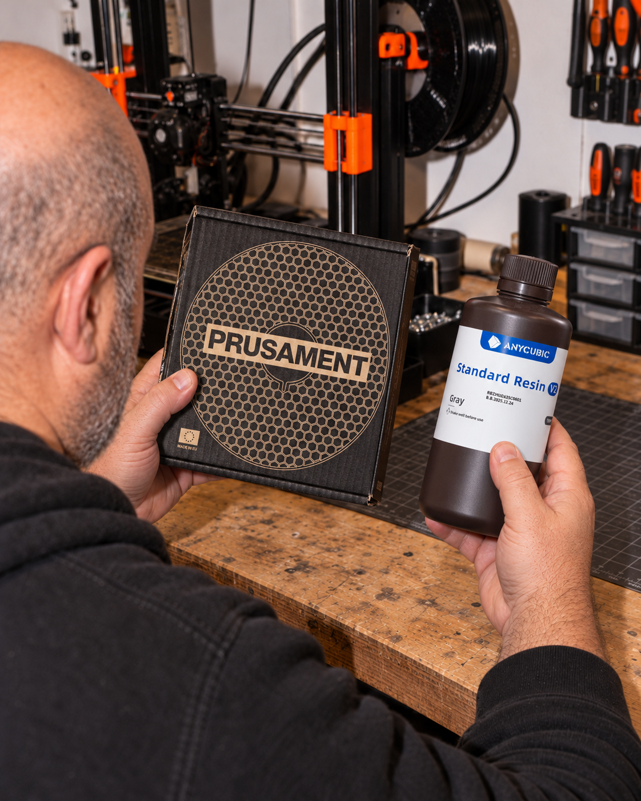
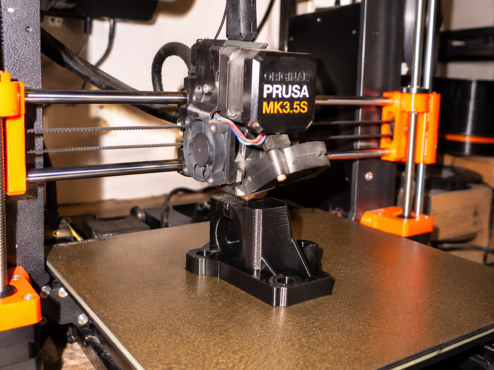
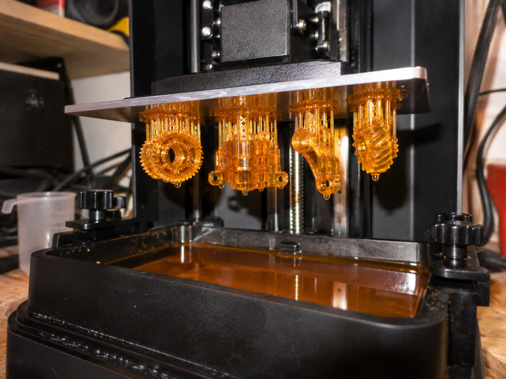
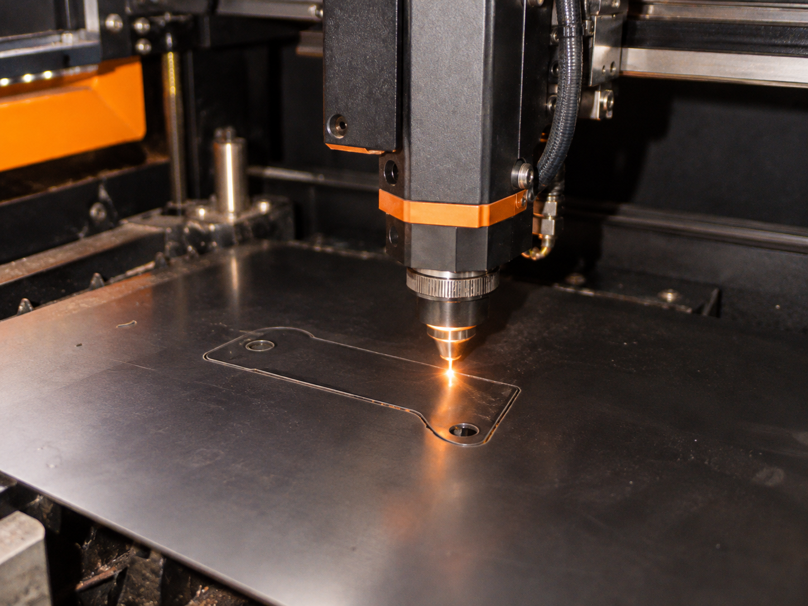
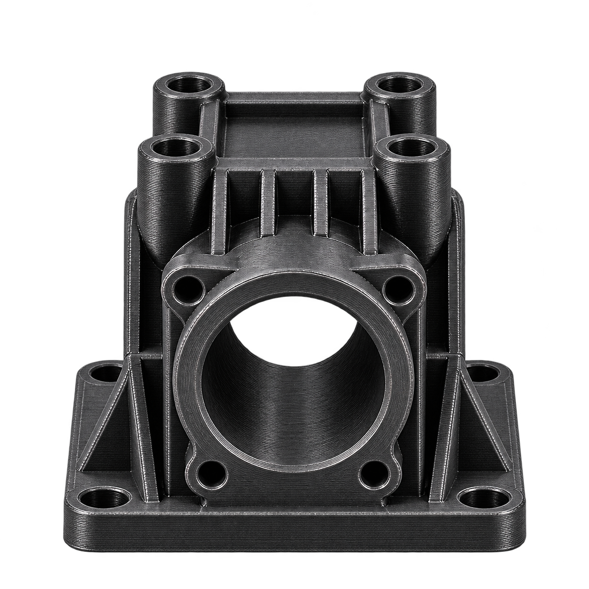
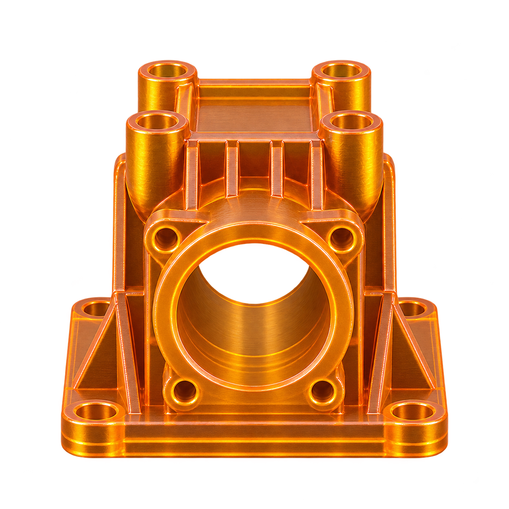

תפקוד מכני
עומס, חיבורים, שחיקה ושימוש חוזר.

מסריקה ותכנון, דרך בחירת חומר וטכנולוגיה, ועד אב־טיפוס וחלק מוגמר שמוכן לעבודה.
בדיקת התאמה לפרויקט↙מגדירים קודם מה החלק צריך לעשות ובאילו תנאים הוא יעבוד. משם בוחנים את החומר ואת טכנולוגיית הייצור יחד.
עומס, חיבורים, שחיקה ושימוש חוזר.
חום, חוץ, לחות וחשיפה לחומרים.
שמירת צורה, ספיגת אנרגיה או תנועה.
מידות קריטיות, פרטים קטנים ומראה סופי.
הקטלוג מחולק לפי טכנולוגיית הייצור ואופי השימוש. הזמינות והדרגה המדויקת נבדקות מול דרישות כל פרויקט.



אותה גאומטריה יכולה לדרוש תהליך אחר לגמרי. ההחלטה מתקבלת לפי תפקיד החלק, הגימור, הכמות והדיוק.

חלקים חזקים ושימושיים, עם חופש רחב בבחירת חומר ובמידות הייצור.

פני שטח חלקים ורזולוציה גבוהה לחלקים שבהם המראה והדיוק מובילים.
שלחו קובץ, שרטוט, תמונה או תיאור קצר. נבדוק את הנתונים ונחזור עם הצעד הבא.